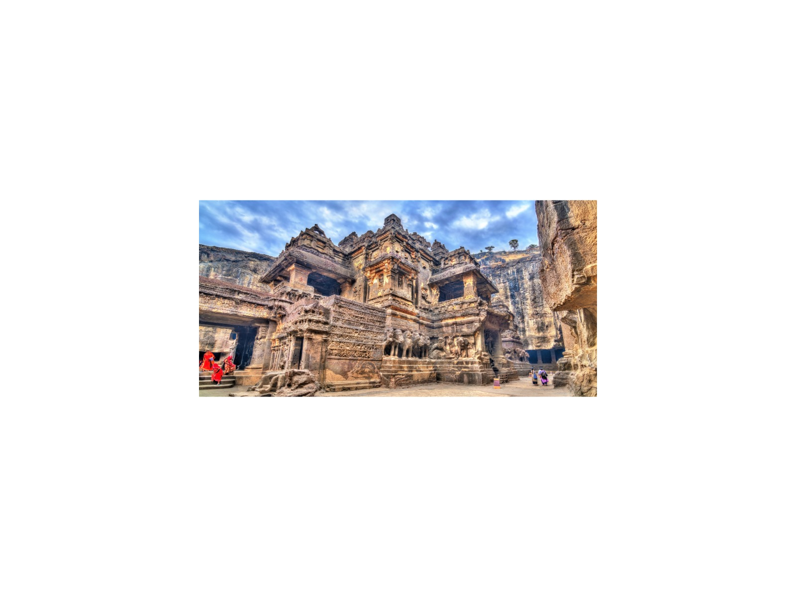
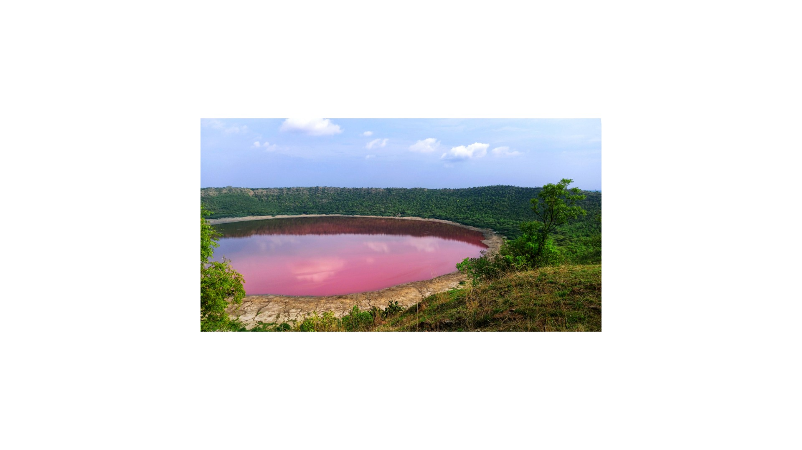
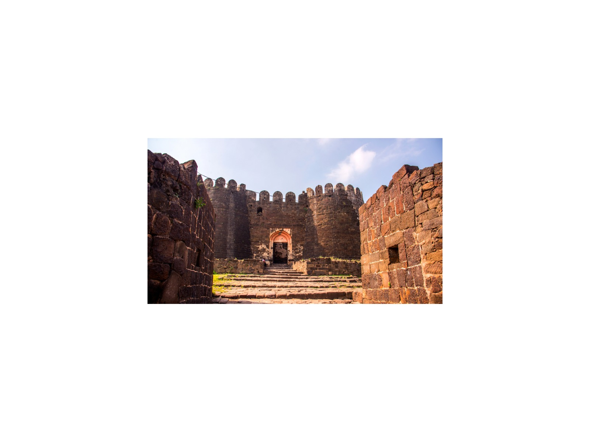
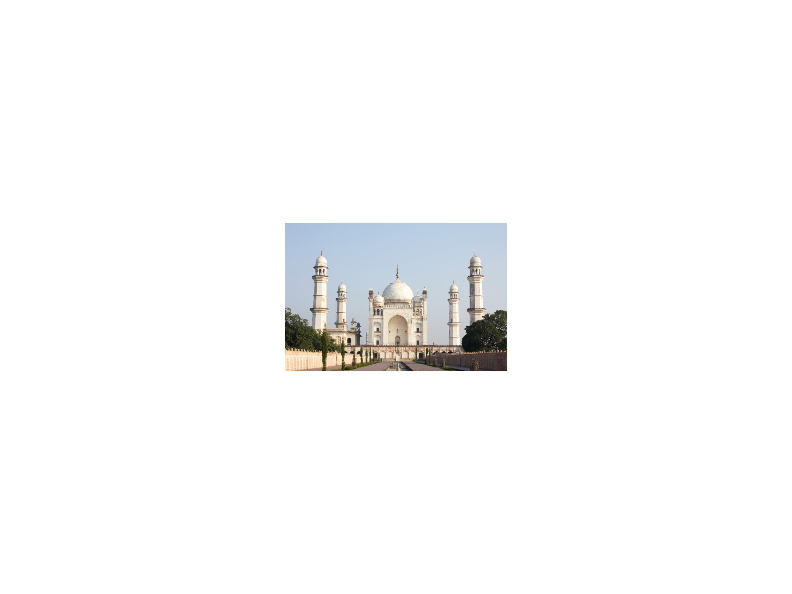
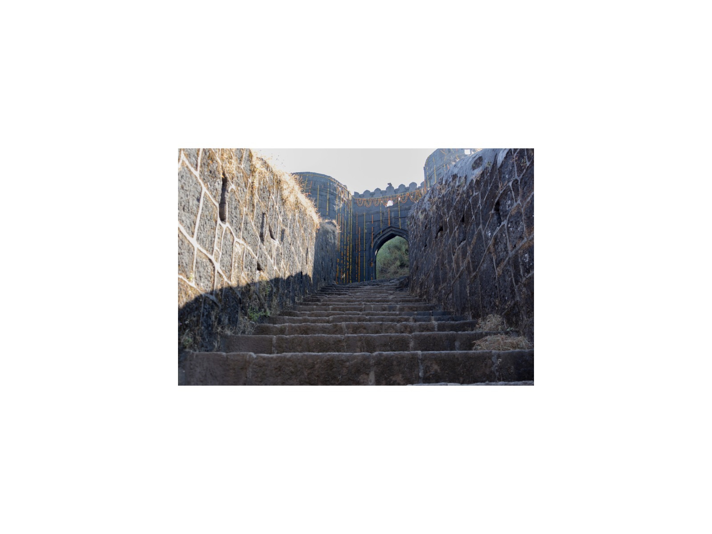
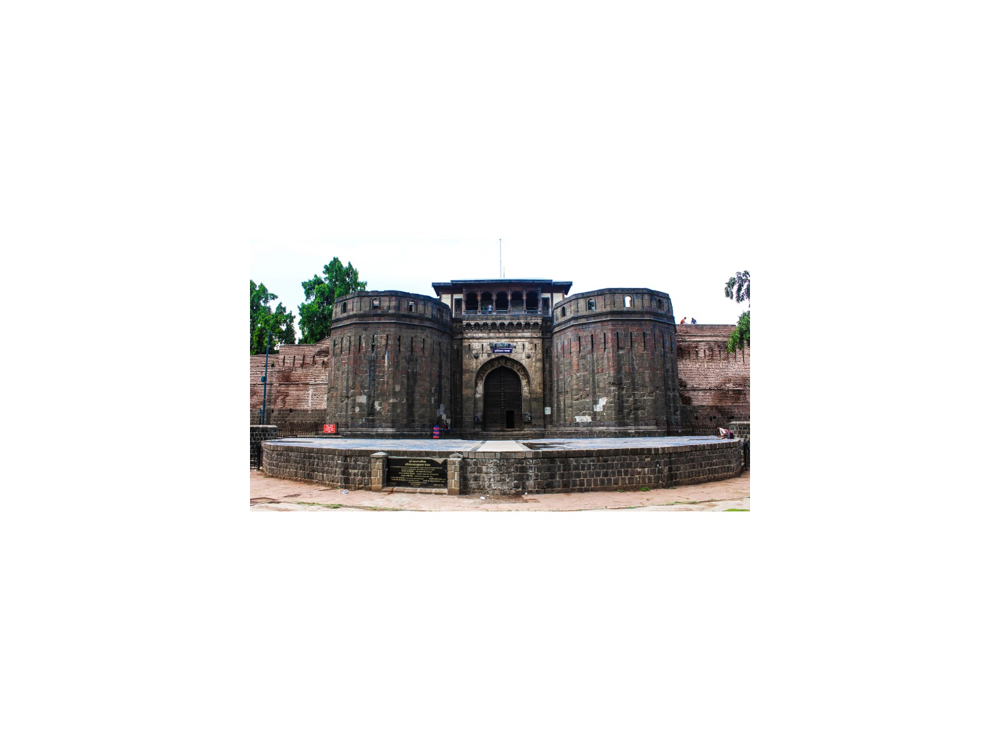
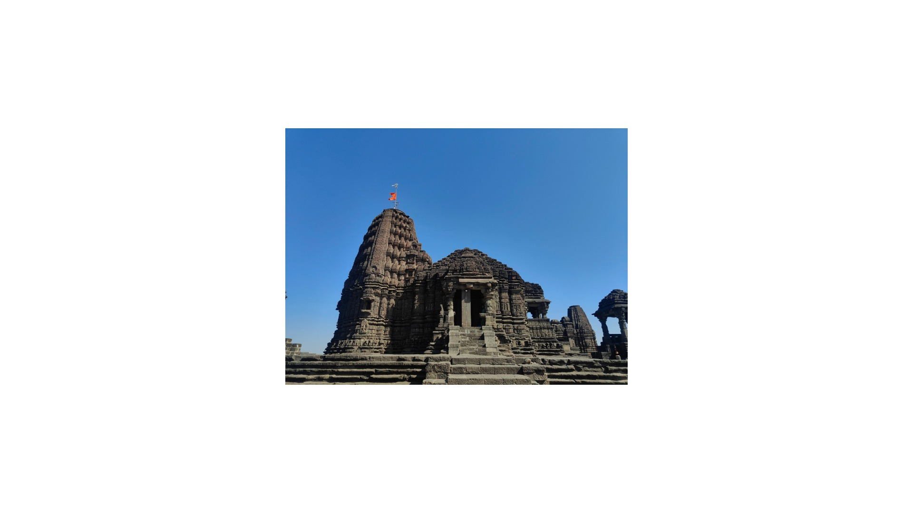

13-Day Empires of the Sahyadri: Marine Forts, Cave Temples & Meteorite Crater
Mumbai · Elephanta · Alibaug · Murud · Mahad · Raigad · Lonavala · Pune · Nashik · Daulatabad · Khuldabad · Aurangabad · Ellora · Ajanta · Lonar
The journey
Sea forts, Shivaji's citadel, the Ajanta and Ellora caves and Lonar's meteorite crater across thirteen days of Maharashtra.
Unites coastal island sea forts, Shivaji's Maratha mountain capital, UNESCO rock-cut cave complexes, and the rare geological Lonar crater into an expansive Sahyadri odyssey. Comfortable rhythm with time at each site.
Highlights
- Murud-Janjira Sea Fort & Raigad Maratha Mountain Citadel.
- UNESCO Ajanta & Ellora Caves (Kailash Temple).
- Lonar Meteorite Crater Lake & Chalukya-era temple ruins.
- Daulatabad Fort, Elephanta Caves, and Bibi Ka Maqbara.
Route and day by day
Schematic route, not to scale.
Day 1Arrival in Mumbai
City landmarks and colonial architecture tour. Overnight in Mumbai.
Day 2Elephanta Caves & Konkan Coast Drive
Morning ferry to UNESCO Elephanta Caves. Drive south along the Konkan coast to Murud (approx. 4–5 hours; Alibaug is an alternative base). Overnight in Murud.
Day 3Murud-Janjira Marine Fort
Sailboat to unconquered Murud-Janjira Sea Fort (boats typically do not run in the monsoon); explore 50-ft walls, concealed main entrance, freshwater springs. Drive to Mahad (approx. 2.5 hours). Overnight in Mahad.
Day 4Raigad Maratha Capital to Lonavala
Ropeway ascent to Raigad Fort plateau (King's Durbar, Takmak Tok execution point). Afternoon drive to Lonavala (approx. 4 hours). Overnight in Lonavala.
Day 5Lonavala Caves & Forts
Tour Karla/Bhaja rock-cut monasteries and Lohagad Fort defenses. Overnight in Lonavala.
Day 6Lonavala to Pune
Tour Shaniwar Wada, Pataleshwar Cave, and Aga Khan Palace. Overnight in Pune.
Day 7Pune to Nashik
Tour Pandavleni Caves and Trimbakeshwar Jyotirlinga. Overnight in Nashik.
Day 8Nashik to Aurangabad via Daulatabad Fort
Daulatabad Fort defenses and Khuldabad. Overnight in Aurangabad.
Day 9Ellora Caves & Kailasa Temple
Tour Ellora Caves (Kailasa Temple) and Bibi Ka Maqbara. Overnight in Aurangabad.
Day 10Ajanta Caves Excursion
Full day exploring Ajanta monastery gorge and ancient murals. Overnight in Aurangabad.
Day 11Aurangabad to Lonar Meteorite Crater
Drive to Lonar Crater. Trek down into Pleistocene meteorite crater lake and explore crumbling Chalukya temples. Overnight in Lonar / Jalna.
Day 12Morning at Lonar & Return to Aurangabad
Morning rim birdwatching and crater exploration. Afternoon return drive to Aurangabad. Overnight in Aurangabad.
Day 13Departure
Transfer to Aurangabad Airport/Station (onward travel not included).
Best time to visit
Best Fair Avoid
Best time: Oct–Feb. Also good: Mar.
October to February is cool and ideal for the caves and forts. The monsoon (June to September) turns the Sahyadri green but can disrupt boats to the sea forts and some cave visits. Murud-Janjira boat services typically stop during the monsoon.
What is included
Included
- Private air-conditioned vehicle with driver
- Licensed guide (English or Russian)
- Monument entry fees
- Hotels (12 nights)
Not included
- Flights
- Meals unless stated
- Tips and personal expenses
- Travel insurance
Indicative; your personal quotation confirms exactly what is included.
Good to know
- Elephanta and Ajanta are closed on Mondays; Ellora is closed on Tuesdays.
- Murud-Janjira boat services typically stop during the monsoon (about June–September).
Places on this journey
Murud-Janjira Sea Fort
Kailasa Temple
Lonar Crater
Daulatabad Fort Elephanta Caves
Elephanta Caves
Bibi Ka Maqbara
Raigad Fort Karla Caves
Karla Caves Lohagad Fort
Lohagad Fort
Shaniwar Wada Pataleshwar Cave
Pataleshwar Cave Aga Khan Palace
Aga Khan Palace Pandavleni Caves
Pandavleni Caves
Trimbakeshwar Ajanta Caves
Ajanta CavesQuestions
Is this journey private?
Yes. Every journey is for you and your travelling companions only, with your own guide, car and driver. There are no groups or shared tours.
Can I change the itinerary?
Yes. This itinerary is a starting point. Tell me your interests, pace and dates and I will adjust it before I quote.
Which languages are available?
Vikramjeet guides in English and Russian.
How demanding is this journey?
Comfortable rhythm with time at each site. The pace rating is moderate pace.
How do I book, and when will I know the price?
Send a request with your dates. You receive a personal itinerary and quotation within 24 hours.
Themes
Deccan & Rock-Cut Heritage UNESCO World Heritage Trail Royal Fortresses & Citadels Wildlife & Eco-Safaris
Destinations
Mumbai & the Konkan Coast Pune & Nashik Aurangabad, Ellora & Ajanta
Similar journeys
 1 Day
1 Day1-Day Taj Mahal & Agra Fort: Private Day Journey from Delhi
Sunrise-fresh light on the Taj Mahal and the red sandstone courts of Agra Fort, in a single private day from Delhi, with your own guide and car.
View journey → 1 Day
1 Day1-Day Imperial Delhi & Spiritual Heritage: Private Full-Day Tour
Old Delhi's lanes, Mughal tombs and sacred sites of three faiths, paced around you in one private day.
View journey → 1 Day
1 Day1-Day Jaipur Royal Express: Private Tour from Delhi
Amber Fort, the City Palace and the Pink City's best-known sights in one long day from Delhi, for travellers who have only a day to give.
View journey →